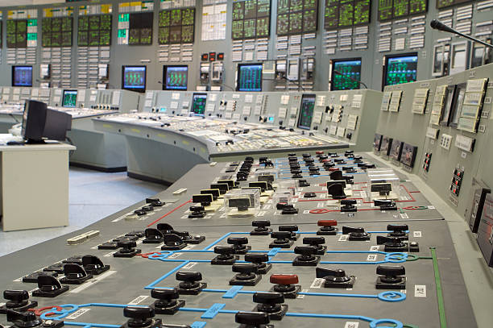

Three dials, one control room.
System operators at Riverside Station watch these three numbers around the clock. Together they answer one question: can the grid meet demand right now, and what happens if something trips offline.
Live system readout

Figures are illustrative and shown for demonstration purposes only. Actual grid conditions are monitored around the clock from Riverside Station.
What each dial means.
-
System Load Percent of capacity
How much of Riverside Station's 210 MW capacity the city is drawing right now. Load climbs on hot afternoons and cold mornings and falls overnight. Above 90%, the station starts calling on purchased backup power.
-
Grid Frequency Hertz, target 60.00
Generation and demand have to stay in balance to hold 60 cycles a second. A needle that drifts off center means generation and demand have fallen out of step, and operators adjust output to correct it.
-
Reserve Capacity Percent held back
Generating capacity kept in reserve in case a unit trips offline unexpectedly. The Board of Public Utilities requires at least 15% held back at all times.